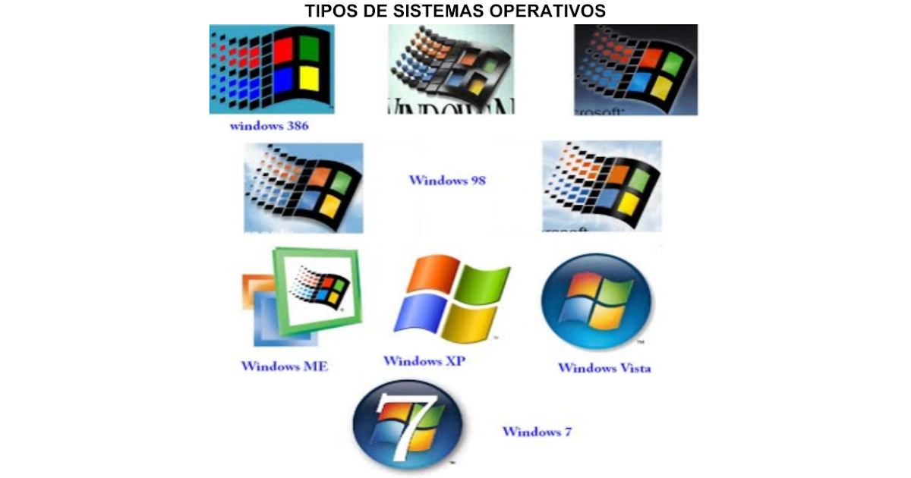
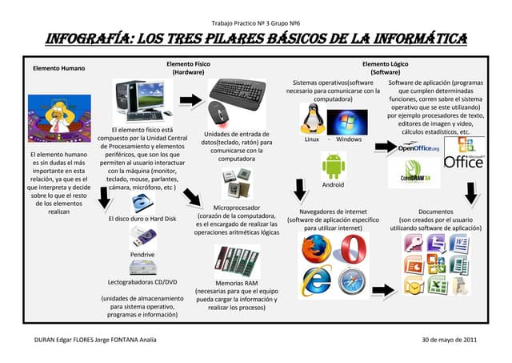
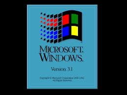
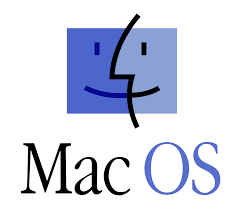
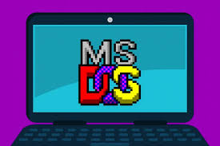

¿Qué son los Sistemas Operativos Monousuarios?
Un sistema operativo monousuario (de mono: 'uno'; y usuario) es un sistema operativo que sólo puede ser ocupado por un único usuario en un determinado tiempo. Ejemplo de sistemas monousuario son las versiones domésticas de Windows. Administra recursos de memoria procesos y dispositivos de las PC'S. Es un sistema en el cual el tipo de usuario no está definido y, por lo tanto, los datos que tiene el sistema son accesibles para cualquiera que pueda conectarse.

Características de un sistema operativo monousuario
Existen diferentes sistemas operativos que se enmarcan dentro de la categoría monousuario. Uno de los primeros de ellos ha sido MS-DOS, este tiene características muy diferentes a los sistemas más modernos como las primeras versiones de Windows y MacOS. Por lo general, estos sistemas operativos se inician accediendo con los datos de un usuario. Este tiene todos los permisos de un administrador por lo que puede realizar cualquier modificación en el sistema y los archivos.

Tipos de sistema operativo monousuario
Mono tarea (single-task)
Un sistema operativo monousuario puede ser un sistema mono tarea, o también llamado single-task. Este tipo de software se limita a la ejecución de solo una tarea por vez y soporta solo un usuario. Hoy por hoy ya no vemos computadoras con estas características tan limitadas ya que el software pierde utilidad.
Multitarea (multi-task)
Un sistema operativo monousuario puede ser un sistema multitarea, o también llamado multi-task. Este tipo de sistema sigue brindado soporte solo a un usuario, pero le permite realizar varias tareas a la misma vez.
Ejemplos de sistemas operativos monousuarios
A continuación les dejamos una lista de los diferentes sistemas operativos que soportan solo un usuario por vez:
MS-DOS.
AmigaOS.
Classic Mac OS.
Windows 1.0.
Windows 2.0.
Windows 3.0.
Windows 3.1x.
Windows 95.
Windows 98.
Windows ME.
  
Aplaste el botón para ir a Menú